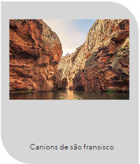

Os Encantos Turísticos de Sergipe
Por: Fulano Bla bla bla, ultima edição 23/09/2023
Sergipe, o menor estado do Brasil, esconde em sua modéstia geográfica uma riqueza cultural e
turística imensa. Com uma diversidade de paisagens e atrações, o estado é um convite à exploração e ao
encantamento. Entre as diversas maravilhas que Sergipe tem a oferecer, três pontos turísticos se destacam por
sua importância histórica, beleza natural e relevância cultural.
Antigo Palácio da Praça Fausto Cardoso:
Situado no coração de Aracaju, na Praça Fausto Cardoso, o Antigo Palácio é um marco da arquitetura sergipana.
Com uma história que remonta ao período colonial, o palácio serviu como sede do governo estadual por muitos
anos. Sua estrutura imponente e bem preservada transporta os visitantes para um passado distante,
permitindo-lhes vislumbrar momentos significativos da história de Sergipe. Ao redor do palácio, a praça, com
seus bancos de ferro, árvores centenárias e o constante burburinho da vida urbana, oferece um cenário perfeito
para uma pausa contemplativa.
Xingó:
Localizado no sertão sergipano, o Cânion de Xingó é uma das maiores atrações turísticas não só de Sergipe, mas
de todo o Nordeste brasileiro. Formado pelas águas do Rio São Francisco, o cânion se destaca por suas formações
rochosas esculpidas ao longo de milhões de anos. A represa de Xingó, com suas águas esverdeadas, oferece
passeios de catamarã que levam os turistas a uma viagem inesquecível entre os imensos paredões do cânion. A
região também é rica em sítios arqueológicos, onde é possível encontrar pinturas rupestres que datam de mais de
8 mil anos.
Passarela do Caranguejo:
Na Orla de Atalaia, em Aracaju, a Passarela do Caranguejo é o ponto de encontro daqueles que desejam
experimentar a deliciosa culinária sergipana. Como o nome sugere, o caranguejo é o protagonista dos bares e
restaurantes da região, servido de diversas maneiras e sempre fresco. Mas a passarela não é apenas sobre
gastronomia: é também um espaço de lazer, com quadras esportivas, lagos, playgrounds e até um oceanário. À
noite, o local se transforma, com música ao vivo, danças e a alegria contagiante do povo sergipano.
